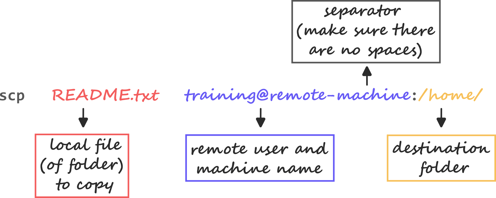

10 Access Remote Servers
If you are a self-learner (rather than attending one of our workshops), you will need an account on a remote server to follow this section.
You will need to adjust the commands shown on this page to match your username and hostname on that server.
- Securely connect and work from a remote computer.
- Copy files to/from a remote computer.
Let’s take a closer look at what happens when we use the shell on a desktop or laptop computer. The first step is to log in so that the operating system knows who we are and what we’re allowed to do. We do this by typing our username and password; the operating system checks those values against its records, and if they match, runs a shell for us.
As we type commands, the 1’s and 0’s that represent the characters we’re typing are sent from the keyboard to the shell. The shell displays those characters on the screen to represent what we type, and then, if what we typed was a command, the shell executes it and displays its output (if any).
What if we want to run some commands on another machine, such as a High Performance Compute (HPC) server at our institution, to work on large-scale applications? To do this, we have to first log in to that machine. We call this a remote login.
In order for us to be able to login, the remote computer must be running a remote login server and we will run a client program that can talk to that server. The client program passes our login credentials to the remote login server and, if we are allowed to login, that server then runs a shell for us on the remote computer.
Once our local client is connected to the remote server, everything we type into the client is passed on, by the server, to the shell running on the remote computer. That remote shell runs those commands on our behalf, just as a local shell would, then sends back output, via the server, to our client, for our computer to display.
10.1 The SSH protocol
SSH is a protocol which allows us to send secure encrypted information across an unsecured network, like the internet. The underlying protocol supports a number of commands we can use to move information of different types in different ways. The simplest and most straightforward is the ssh command which facilitates a remote login session connecting our local user and shell to any remote user we have permission to access.
ssh training@remote-machineThe first argument specifies the location of the remote machine (by IP address or a URL) as well as the user we want to connect to separated by an @ sign.
For the purpose of this course, we’ve set up a container on our cluster for you to connect to. The address remote-machine is actually a special kind of URL that only your computer will understand. In real life this would normally be an address on the internet which can be access from anywhere or at least an institutional local area network.
The authenticity of host '[192.168.1.59]:2231 ([192.168.1.59]:2231)' can't be established.
RSA key fingerprint is SHA256:4X1kUMDOG021U52XDL2U56GFIyC+S5koImofnTHvALk.
Are you sure you want to continue connecting (yes/no)?When you connect to a computer for the first time you should see a warning like the one above. This signifies that the computer is trying to prove it’s identity by sending a fingerprint which relates to a key that only it knows. Depending on the security of the server you are connecting to they might distribute the fingerprint ahead of time for you to compare and advise you to double check it in case it changes at a later log on. In our case it is safe to type yes.
training@192.168.1.59's password: ********Now you are prompted for a password. In an example of terribly bad practice, our password is the same as our username training .
training@remote_machine:~$You should now have a prompt very similar to the one you started with but with a new username and computer hostname. Take a look around with the ls command and you should see that your new session has its own completely independent filesystem. In this case we have some files from a sequencing experiment on the model organism Drosophila.
Let’s say we wanted to copy these files to our local computer. To do this, first we need to go back to our original computer’s shell. Use the key combination Ctrl+D on an empty command prompt to log out (or alternatively the command exit).
Instead of a password authentication, you can use a key-based authentication method to access remote servers. This essentially allows you to access a remote server from a given computer without having to type your password every time.
To set this up, see here: How to Set Up Passwordless SSH Login.
Most remote servers offer a terminal-based interface only. However, it is possible to run a window-based application from the remote server using the so-called X Window System (or X11).
To learn more about this, see this page: Use X forwarding on a personal computer to securely run graphical applications.
10.2 Moving files
ssh has a simple file copying counterpart called scp which uses all the same methods for authentication and encryption but focuses on copying files between computers in a similar manner to the cp command we learnt about before. Let’s see an example of copying a small file from our local computer to the remote server.
Making sure we’re in the data-shell directory let’s copy the README.txt file to the remote machine:
scp README.txt training@remote-machine:/home/trainingREADME.txt 100% 563 1.2MB/s 00:00The format of the command should be quite familiar when comparing to the cp command for local copying. The last two arguments specify the source and the destination of the copy respectively. The difference comes in that any remote locations involved in the copy must be preceded by the username@IP syntax used in the ssh command previously. The first half tells scp how to access the computer and the second half tells it where in the filesystem to operate, these two segments are separated by a :.

scp command.It looks like we’ve copied the file, but we should check.
Establishing a whole ssh session just to run one command might be a bit cumbersome. Instead we can tell ssh all the commands it needs to run at the same time we connect by adding an extra argument to the end. ssh will automatically disconnect after it completes the full command string.
ssh training@remote-machine "ls /home/training/"README.txt
drosophila
drosophila_samples.csvSuccess!
10.3 Exercises
10.4 Summary
- The
sshprogram can be used to securely login to a remote server. The general command isssh username@remote, whereusernameis the user’s name on the remote machine andremoteis the name of that machine (sometimes in the form of an IP address). - To copy files to/from a remote server we can use the
scpcommand. The syntax for this command isssh username@remote:path_to_remote_file path_on_local_machineto copy a file from the remote machine to the local machine orssh path_on_local_machine username@remote:path_to_remote_filevice-versa.